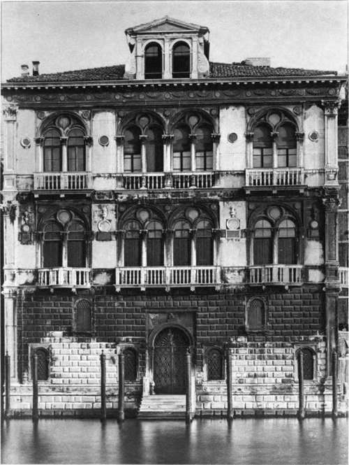
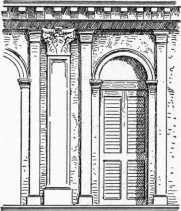
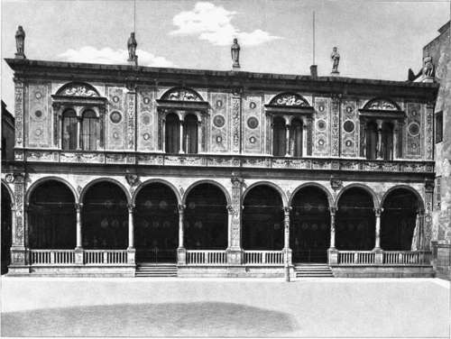

Palace Architecture Of The Renaissance In North Italy. Part 3
Description
This section is from the book "Character Of Renaissance Architecture", by Charles Herbert Moore. Also available from Amazon: Character of Renaissance Architecture.
Palace Architecture Of The Renaissance In North Italy. Part 3
The Palazzo Corner-Spinelli (Plate VII), attributed to Pietro Lombardo, is one of the most characteristic. Its broad-walled basement, and the well-ordered subdivisions of the upper stories, are exceedingly fine, though the basement is high and the principal story rather low. No complete orders occur in this fagade, but superimposed pilasters are placed on the angles, and an entablature is carried across each of the upper stories, while only a narrow string course crowns the basement. The windows are disposed in the manner of those of the mediaeval Venetian palaces, a pair of them being set together in the middle, and a single one occupying the centre of each lateral bay in conformity with the divisions of the interior. These windows are wide, and are composed in the mediaeval manner, with a dividing shaft and two small arches encompassed by a larger arch, as in the Scuola di San Rocco. A noticeable peculiarity of detail in these windows is the incomplete circle in the tympanum space, which intersects the smaller arches so as to form sinuous curves like those of Flamboyant Gothic tracery. The archivolts are carried by small pilasters, and the spandrels are framed with mouldings. The windows open on corbelled balconies with balustrades in Renaissance form of great refinement and elegance, and the balcony rails are carried as string courses along the walls. The panelling of the pilasters, as in this design and many others that we have noticed beginning with Alberti's fagade of St. Andrea of Mantua, is of questionable propriety, for supporting members need to have an expression of concentrated strength with which such treatment is hardly compatible. The surface of a pier or pilaster may be enriched by any kind of fluting or chasing that does not materially diminish its substance, but to sink panels in such supporting members is to destroy in a measure the expression of homogeneous compactness. The classic details in this building show the same disregard for correct classic forms and proportions that we find in the art of the Renaissance generally. The superimposed pilasters on the angles are of uniform width, though they differ greatly in height, and those of the various openings are of still different proportions and sizes. This association of members of the same kind, but of many different magnitudes, is proper to the organic mediaeval architectural systems, under the influence of which these designers were unconsciously working; but it is foreign to the principles of the classic art. The beauty of the Corner palace, is, however, quite independent of the neo-classic details which are sparingly ingrafted upon it, and belongs to the larger forms and proportions of the mediaeval Venetian style.
Plate VII
Palazzo Corner-Spinelli Venice
Other Venetian palaces of the early Renaissance exhibit other peculiarities which it would be tedious to describe at length, but it may be well to notice a few of them. The Palazzo Contarini, for instance, has its three principal interior divisions marked by superimposed pilasters in addition to the pilasters on the angles. The basement order is raised on a podium, and both the basement and the principal story have an entablature, while the top story is crowned with a low cornice with modillions and no complete entablature. The arched portal is flanked with pilasters in two orders, both crowned with entablature blocks, but no entablature spans the opening under the arch, and the spandrels are framed with mouldings and crowned with a cornice. The windows are narrow and round arched, and have no dividing members. Four of these are grouped together in the central bay of each upper story, and those of the principal story are framed in with a Corinthian order of five columns surmounted by a pediment, the whole composition having exactly the form of a diminutive temple front. Each lateral bay above the basement has two single windows, those of the principal floor being each framed with a Corinthian order like that of the central group, and crowned with a pediment. The windows of the top story are flanked by very slender pilasters of equal height with those of the main order, and smaller pilasters carry the archivolts. The end windows of the central group and the inner ones of the lateral bays come close to the pilasters of the main order, thus giving on each side a group of pilasters of three different proportions and magnitudes, as in Figure 93. The front as a whole is good in its proportions, and quiet in effect. The neo-classic details add nothing to it of value, and the composition would be better without them.
The Palazzo Vendramini has full orders in all three stories, and the distinctive Venetian character is materially altered by them. The usual scheme of the Venetian palace front, in which a wide central bay wholly occupied by openings is flanked by lateral bays each with a solid wall on either side of an opening, is indeed retained, but the effect of it is much obscured by the prominence given to the orders, which are in high relief, and extend across the whole front. The openings have the mediaeval form of two shafted arches beneath an embracing arch with a circle in the tympanum space. Three, instead of two, of these compound openings are grouped within the unusually wide central bay, and each one fills an intercolumnia-tion of the order. In each lateral bay the columns of the order are unequally spaced in conformity with the narrow strips of solid wall, one on either side of the opening, which they enclose, giving a wide central intercolumniation and two narrow ones. The cornice ot the basement entablature is widened, and supported on corbels from the frieze, in front of the windows of the principal story, and balustrades are set on these projecting ledges so as to form balconies. To give emphasis to the topmost entablature as the crowning feature of the facade, it is made so high as to be out of all proportion to the order of which it is a part.
Of the later palace architecture of Venice it is unnecessary to give any extended analysis because it is less distinctly Venetian, and belongs more fully to the so-called Roman Renaissance style which is essentially uniform in character in all parts of the country. In these later palace fronts the main divisions of the typical Venetian scheme persist indeed, but they are so slightly emphasized, and so overladen with heavy orders, that they lose their proper effect. In Sansovino's Palazzo Cornaro, for instance, already described (p. 124), these main divisions of the front are hardly noticeable in a general view. The general effect is of evenly spaced pairs of columns in each of the upper stories. It is not until we examine the composition closely that we perceive the narrower proportions of the three middle openings. The same is true of the facade of the Palazzo Grimani by Sanmichele, though in this case the grouping is different, the columns being set in pairs in the lateral bays only. Even in the still later and heavy rococo design of the Palazzo Pesaro by the architect Longhena, which is based on the scheme of the Library of St. Mark, the unequal main divisions of the Venetian palace type are still preserved.
Fig. 93.
Plate VIII
Palazzo Del Consiglio Verona
Continue to:
- prev: Palace Architecture Of The Renaissance In North Italy. Part 2
- Table of Contents
- next: Palace Architecture Of The Renaissance In North Italy. Part 4